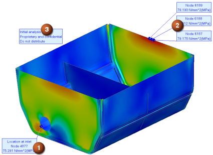

Design Simulation provides two tools you can use to interrogate results at specified nodes or elements.
To create, edit, and manage persistent annotations for post-processing displays, use the New Annotation command.
|

|
To probe and display nodal and elemental information in your post view, use the Identify command. You can:
Obtain node and element IDs.
Display numerical results for nodes and elements.
List results for selected nodes and elements.
Write node and element data to either a spreadsheet or .csv file for use defining fields or for processing outside NX.